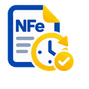

NFe Agendamento
As regras de fornecedor ficam somente neste navegador. O arquivo não é enviado para o site nem para a Cloudflare.
Consulta direta SEFAZ
Informe uma vez o CNPJ do certificado A1 usado neste computador. O CNPJ fica somente no armazenamento local da extensão e é necessário para montar a consulta NFeDistribuicaoDFe. O Chrome/Edge continua responsável pelo certificado e pela chave privada.
Verificando configuração local…
Regras de fornecedor
Selecione um supplier-rules.json compatível. O formato legado do Bridge (por exemplo Version, Suppliers, Id e TaxIds) também é aceito e normalizado localmente. CNPJ/CPF permanecem no armazenamento local da extensão.
Nenhuma alteração nesta sessão.